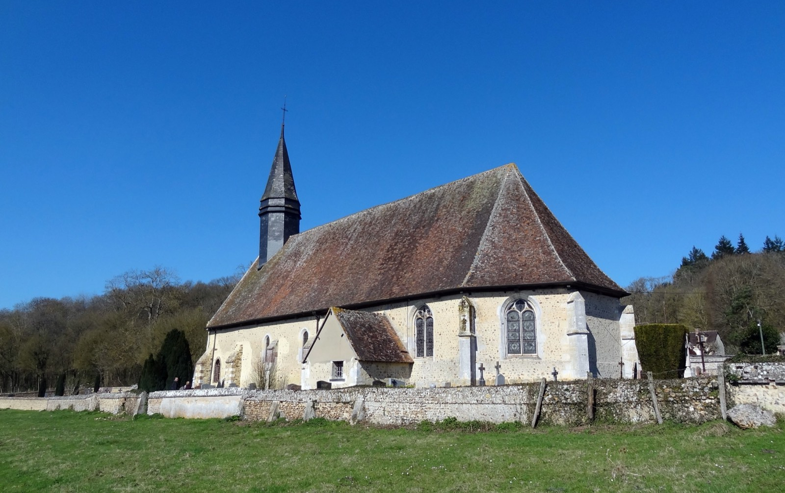
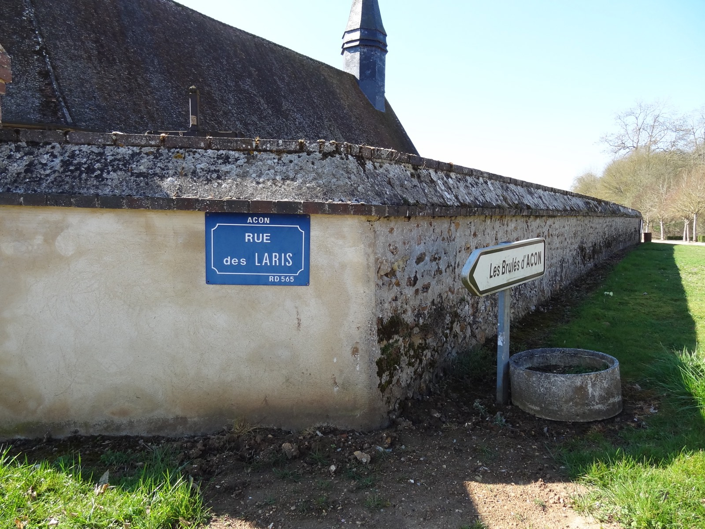
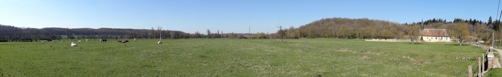

Le village
Posé de part et d'autre de la vallée de l'Avre, Acon mêle prairies, bois et cours d'eau, un patrimoine ancien et une vie de village tranquille, à la lisière de la Normandie et du Perche.
Situation
Aux confins de la Normandie et du Perche
Acon est une commune rurale du sud de l'Eure, limitrophe du département de l'Eure-et-Loir (28) et voisine du parc naturel régional du Perche. La route nationale 12 et la rivière Avre traversent le territoire : elles séparent le hameau des Brûlés, d'un côté, du Rousset et du Mesnil, de l'autre.
Tout autour, les villages de la vallée — Tillières-sur-Avre, Breux-sur-Avre, Nonancourt, Verneuil d'Avre et d'Iton — dessinent un paysage de prairies humides, de haies et de bois où il fait bon marcher.
Le territoire
Trois hameaux, un village
Les Brûlés
Sur une rive de l'Avre, séparé du reste de la commune par la N12. Son nom apparaît autrefois sous la forme « Les Bullez ».
Le Mesnil
Anciennement « Le Mesnil-Pipaut », du nom d'une famille présente à l'époque des ducs de Normandie. « Mesnil » désigne un petit domaine rural.
Le Rousset
Le hameau où se trouve la mairie, 8 rue de la Mairie. On l'écrivait jadis « Le Roiset ».
Patrimoine
L'église Saint-Denis
Détruite pendant la guerre de Cent Ans, l'église Saint-Denis a été rebâtie au XVIᵉ siècle : la nef en 1514, puis le chœur vers 1540. Sous sa voûte de bois se cachent de belles peintures murales de la fin du XVIᵉ siècle et une poutre de gloire figurant le Christ en croix. L'édifice est inscrit au titre des monuments historiques depuis le 8 janvier 1998.


Un trésor discret
La nécropole dolménique des Prés d'Acon
Dans la plaine de l'Avre subsiste un ensemble mégalithique exceptionnel : une nécropole dolménique du Néolithique moyen, vieille d'environ 5 800 ans et longue d'à peu près 110 mètres — une rareté dans tout le Bassin parisien. Repérée en 1972, elle est elle aussi inscrite aux monuments historiques (24 février 1998). Un lien tangible avec les premiers habitants de la vallée, bien avant que le village ne porte son nom.
Sur le terrain, restons discrets : le site est fragile et se trouve sur des terrains agricoles. On l'admire sans le déranger.

Nature & balades
Se promener autour d'Acon
La vallée de l'Avre invite à la marche. Le sentier de grande randonnée GR22, qui relie Paris au Mont-Saint-Michel, passe dans les environs et longe la rivière. Entre prairies, bois et chemins creux, on croise le patrimoine ordinaire du sud eurois : lavoirs, ponts et points de vue sur la vallée.
Vous avez une belle photo d'Acon, un coin de balade préféré, un souvenir à raconter ? Partagez-le avec le village